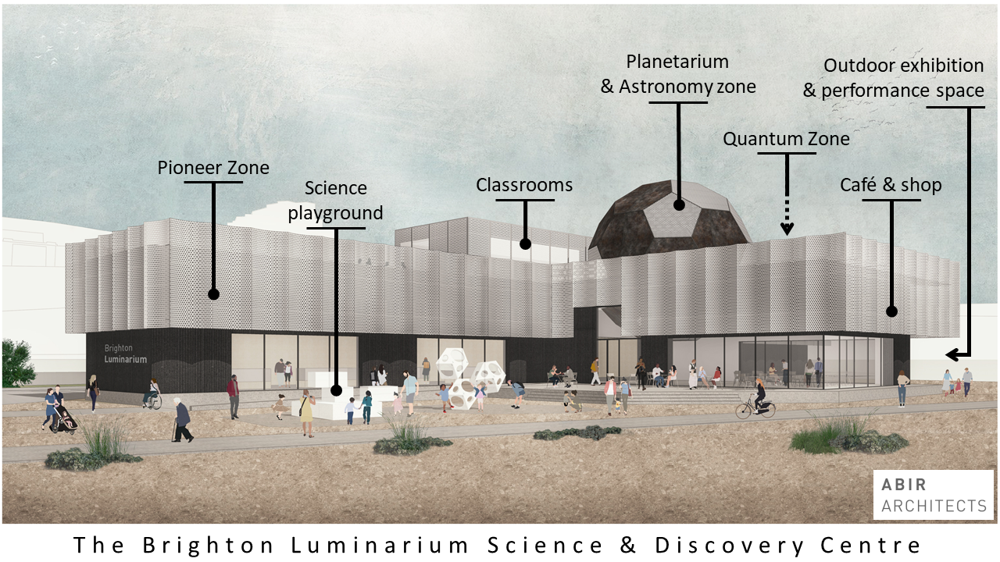

How the Brighton Luminarium might look at the
Black Rock site beside the Brighton Marina.
The Vision
Our vision is for a science & technology discovery centre, called the Brighton Luminarium, to be built at the Black Rock site on Brighton’s sea front, immediately west of the Brighton Marina. The Brighton Luminarium will be a unique attraction that will showcase Brighton with innovative architecture, exhibits and interactives, creating memorable and exciting days out for tourists, local families, and school groups alike.
The overarching theme of the Brighton Luminarium is light, and the centre will consist of the following elements...
- The Pioneer Zone will explore the achievements of Brighton’s engineering visionaries, such as Magnus Vok's. Many visitors would travel to the venue via Volk’s Electric Railway that still regularly runs along the sea front as it has for 140 years!
- The Astronomy Zone will explore how astronomers study distant light to understand our place in the Universe, and will include a planetarium to present visitors with the latest astronomical discoveries and stunning images of our Universe. The planetarium dome will be in the shape of a buckyball, to acknowledge Sir Harry Kroto being awarded the Nobel Prize for Chemistry in 1996 for the discovery of the carbon-60 molecule at the University of Sussex in Brighton.
- The Quantum Zone will be the world's first quantum museum. Visitors will explore how the quantum nature of light creates the colours that we see all around us in a Quantum arcade, where modern arcade-style games will introduce quantum physics to visitors in a fun and engaging way.
- Classrooms will allow school groups to attend syllabus-linked workshops and would be available for hire for corporate or community events outside of school hours, and an exhibitions & performance space will host a variety of temporary exhibitions and events (e.g. Brighton Fringe, etc), from photographic exhibitions to open-air theatre.
- A café offering sea views with outdoor seating would become a destination in its own right, and the centre will include a shop selling relevant toys and gifts and toilet facilities (including a changing places facility).
